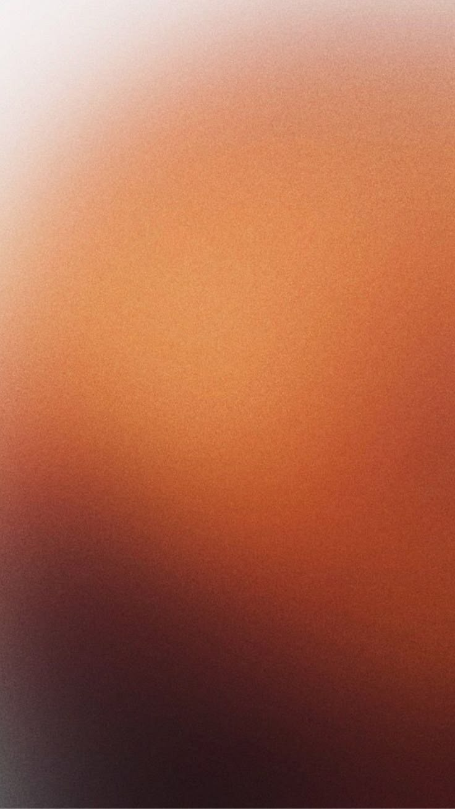
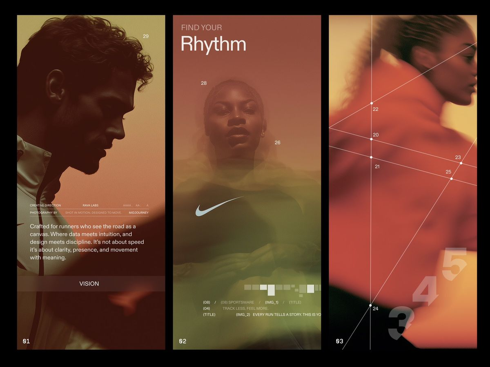
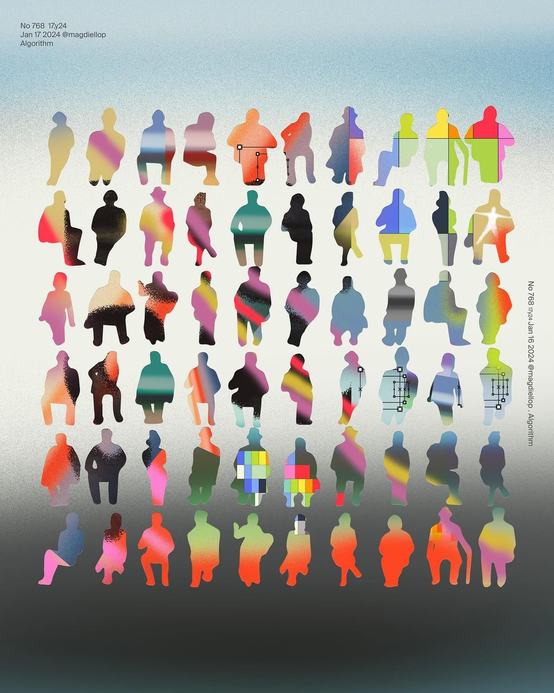

Product Video
Think it. Say it. Draft it.
The problem
Design tools ask you to type exactly what you want. Early ideas are too loose to type. Draft lets you say them and see them.
Voice tools were how I learned to read and write, from computers that read to me to Dragon Dictation all through high school. Draft brings that same ease to the first minutes of a creative idea.
How it works
One sentence in. Three directions out.
- 01SpeakTap once and describe a feeling, reference, or rough idea.
- 02InterpretClaude maps what you said to design keywords: color, UI, image, and moodboard.
- 03GenerateDraft builds three directions, pulling imagery from Pexels and Unsplash.
- 04SaveKeep what fits in your library. Toss the rest.




What Draft does
Speak once. Get three directions
across four ways to see your idea.
Palette suggestions pulled from your brief. Soft, bold, muted, electric, earthy. Built to match the feeling and direction of the project, not just random color combinations.
Interface references that reflect the type of product you're building. Layouts, typography, interactions, and flows pulled from real products with a similar energy and structure.
Photography, textures, illustrations, and visual references chosen for mood and atmosphere. Less about matching keywords, more about capturing the right feeling.

Everything brought together into one visual direction. Color, interface inspiration, imagery, and overall tone organized into a board you can actually build from or present to a team.